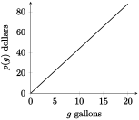

Subsection 1.1.1 Representations of Change
In mathematics, particularly applied mathematics, we need to be able to interpret real-world phenomena in four ways: numerically, algebraically, verbally, and graphically.
Example 1.1.1.
The price of gas at a certain 7-11 in Norman was $4.39 per gallon on June 26th. Represent this data in four ways.
Solution.
-
Numerically: We can numerically represent the data by placing values in a table.
| Gasoline Pumped (in gallons) |
0 |
1 |
5 |
10 |
15 |
20 |
| Total Cost (in USD) |
0 |
4.39 |
21.95 |
43.90 |
65.85 |
87.80 |
Algebraically: Since we are paying $4.39 for every gallon, it is reasonable to express the situation by the function \(p(g) = 4.39g\) dollars (total cost), with \(g\) gallons pumped.
Verbally: The problem is given to us verbally, but using we'll rephrase it to sound more like what we would expect in this class. The price at the pump for gasoline is $4.39 per gallon of gasoline pumped.
-
Graphically: We may use a graph to display this same information. Since we created the function \(p(g) = 4.39g\text{,}\) we can plot this in order to create a graphical representation of the data.

The process of using information like this to generate something usable is called mathematical modeling, and we call the result a model. Business Calculus courses place heavy emphasis on developing and deploying models.
Subsection 1.1.2 Functions & Representations
A relation is a rule which links an input variable to an output; given one piece of information, we can determine the corresponding piece. A special type of relation is one called a function.
Definition 1.1.2. Function.
A function is a rule that assigns a single output to each input value. For a given output function \(f\text{,}\) and given input value \(x\text{,}\) this is notated \(f(x)\text{.}\)
It is very important that you understand this notation. One of the most common mistakes in 1743 and 2123 is a misunderstanding of how function notation works. The letters chosen (\(f,g,h,k,g,A,\) etc.) indicate the name of the function, and the numbers/variables inside the parentheses indicate what the function is being applied to. A way to remember this is to read the expression \(f(x)\) as ''\(f\) of \(x\)''.
Example 1.1.3.
Let \(g\) be a function. Write the correct notation for the following situations:
\(g\) applied to the number 5
\(g\) applied to the number 10
\(g\) applied to the variable \(x\)
\(g\) applied to the variable \(y\)
\(g\) applied to the expression \(x + 1\)
\(g\) applied to the expression \(10 - y\)
\(g\) applied to the expression \(x + h\)
Solution.
\(\displaystyle g(5)\)
\(\displaystyle g(10)\)
\(\displaystyle g(x)\)
\(\displaystyle g(y)\)
\(\displaystyle g(x+1)\)
\(\displaystyle g(10-y)\)
\(\displaystyle g(x+h)\)
Example 1.1.4.
Evaluate the function \(f(x) = 3x - 2\) at the inputs:
\(\displaystyle x =2\)
\(\displaystyle x =3\)
\(\displaystyle x =-4\)
\(\displaystyle x =k\)
\(\displaystyle x =k+7\)
\(\displaystyle x =3k+21\)
Solution.
4
7
\(\displaystyle -14\)
\(\displaystyle 3k-2\)
\(\displaystyle 3k+19\)
\(\displaystyle 9k+61\)
We may also represent functions using an input/output diagram. One is given below, for the previous example:
Every function is a relation, but not every relation is a function. If a relation gives more than one output value for even a single input value, then it cannot be a function. This can be determined using a verbal, numerical, or graphical description of the data.
Example 1.1.5.
Let \(C(t)\) represent the number courses offered campus-wide during the week at time \(t\text{,}\) and \(O(t)\) represent the number of students walking on the South Oval at time \(t\) last Monday. Is \(C\) a function? What about \(O\text{?}\)
Solution.
\(C(t)\) is not a function: take, for example, 12:00pm. On Monday, there may be 250 classes offered but on Tuesday there could only be 200. The input has multiple outputs.
\(O(t)\) is a function because at that specific time and place, there can only be one fixed number of people.
Example 1.1.6.
Below are numerical expressions for the functions \(h\) and \(k\text{.}\) Is \(h\) a function? What about \(k\text{?}\)
| \(x\) |
0 |
1 |
1 |
2 |
5 |
6 |
| \(h(x)\) |
0 |
1 |
2 |
3 |
4 |
5 |
| \(t\) |
0 |
1 |
1 |
2 |
5 |
6 |
| \(k(t)\) |
0 |
1 |
1 |
3 |
4 |
5 |
Solution.
\(h\) is not a function because the input 1 maps to two outputs; \(k\) is a function because 1 only maps to 1 (despite the duplication)
Example 1.1.7.
Are both of these graphs functions? Why or why not?
Solution.The graph of the left is a function because each input has only a single output; the right graph is not a function because each input in \([-2,2]\) (except at 0) has multiple outputs.
Subsection 1.1.3 Model Output and Units of measure
In real-world applications, the proper units of measure must be attached to a model and every result derived from that model; in this way, we can gain meaningful information from whatever is it we do. The verbal description of a function gives us the units of measure. In our first example, our input unit is gallons, and our output unit is dollars.
Example 1.1.8.
The population of Canada between 1900 and 2010 is given by the model
\begin{equation*}
p(t) = 3(1.03^t)\text{ million people}
\end{equation*}
where \(t\) is the number of years since the end of 1900.
When did the population reach 155 million people? Write a sentence interpreting the result.
Determine the population in the year 1990. Write a sentence interpreting the result.
Give a description and the unit of measure for both the input and output variables.
Draw an input/output diagram for \(p\text{,}\) and a graph of \(p\text{.}\)
Solution.
\(t = 133.46\) years after 1900. The sentence is: the population of Canada will reach 155 million people 133.46 years after 1900.
42.90 million people. The sentence is: In the year 1990, Canada's population was 42.90 million people.
The input is years since 1900 and the output is million people.
Example 1.1.9.
Calculate the output value that corresponds to the inputs \(t = 4.5\) and \(t = -2\) for the function \(m(t) = \dfrac{3}{8}t + 2\text{.}\)
Solution.
\(m(4.5) = 3.5\) and \(m(-2)=1.25\)
Example 1.1.10.
Calculate the output value that corresponds to the inputs \(x = 10\) and \(x = -3\) for the function \(f(x) = 7x^2 -2x-3\text{.}\)
Example 1.1.11.
Let \(f(x) = 2.5\ln x + 3\text{.}\)
Does the expression \(f(x) = 7\) ask to find an input or output?
Solve (a).
Example 1.1.12.
Let \(f(x) = 6.1x + 3.1^x\text{.}\)
Does the expression \(x = 2.5\) ask to find an input or output?
Solve (a).
Solution.
Output
\(\displaystyle f(2.5) = 32.17\)
Example 1.1.13.
Let \(u(t) = \dfrac{27.4}{1+13e^{2t}}\text{.}\)
Does the expression \(u(t) = 15\) ask to find an input or output?
Solve (a).
Example 1.1.14.
The number of donors to the American Red Cross Disaster Relief Fund who donated more than \(x\) million dollars during 2005 is represented as \(d(x)\text{.}\)
Write a sentence of interpretation for \(d(5) = 2\text{.}\)
Write the function notation for the statement: ``Seventy-five groups donated at least $500,000 to the Disaster Relief Fund in 2005.''
Solution.
The number of donors to the Red Cross Disaster Relief Fund who donated more than 5 million dollars was 2.
\(\displaystyle d(0.5)=75\)
Example 1.1.15.
The average number of people standing in the Chick-Fil-A line on Wednesdays can be represented by \(p(t)\text{,}\) where \(t\) is the number of hours after 12:00pm.
Write a sentence of interpretation for the expression \(p(0) = 32\)
Write the function notation for the statement ''At 1:15pm, there are an average of 15 people in line at Chick-Fil-A''.
Solution.
At noon on Wednesday, 32 people on average were standing in the Chick-Fil-A line.
\(\displaystyle p(1.25)=15\)